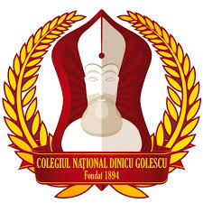

I am a third-year student at the Faculty of Automatic Control and Computer Science, part of the National University of Science and Technology Bucharest, specializing in Systems Engineering. I study algorithms, optimization, control systems, and software development, combining applied mathematics with programming to solve complex problems.

I graduated from the Mathematics-Informatics track, where I discovered my passion for programming, algorithms, and analytical thinking. This experience guided me toward technical studies in systems engineering.
</ Commpetences >
Numerical analysis, optimization methods, and mathematical modeling for solving engineering problems.
</ Hobby >
I enjoy science-fiction and psychological movies and series that explore ideas about technology and society. I also enjoy reading fantasy and science-fiction books for inspiration and relaxation.
I enjoy traveling and discovering new places, whether natural landscapes or cities. Time with friends and social experiences inspire me and broaden my perspective.
Programming is both a technical skill and a way to solve complex problems. I have experience with C/C++, Python, MATLAB, Unity, and web development, combining algorithms, logic, and creativity in my projects.